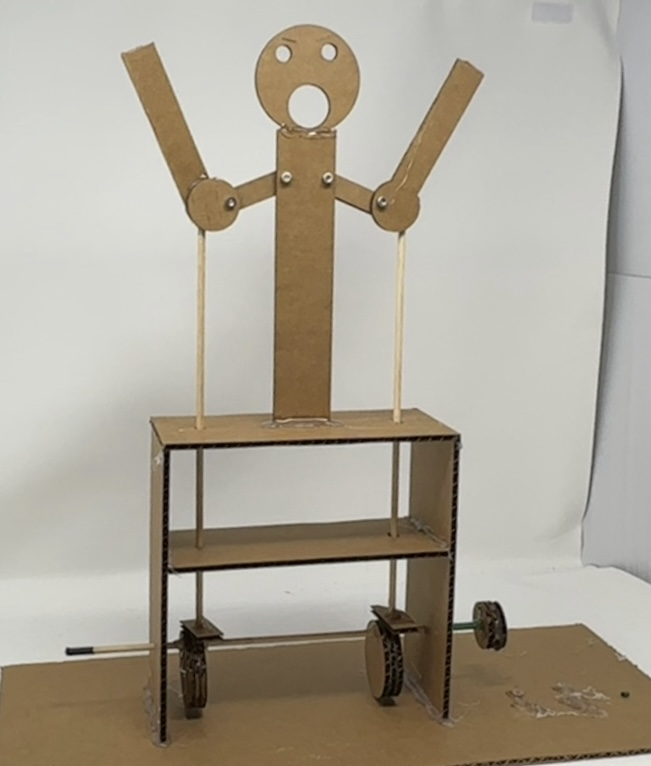
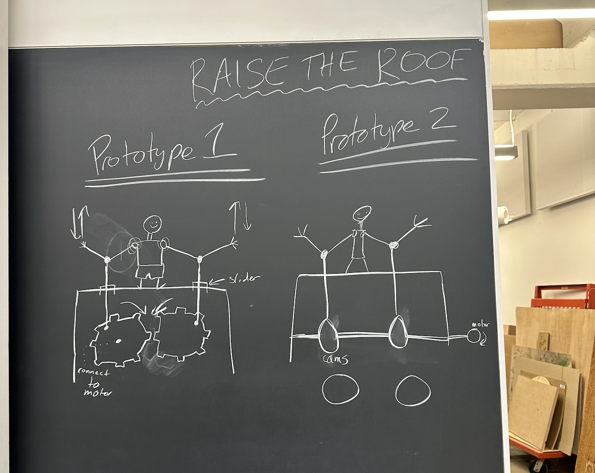
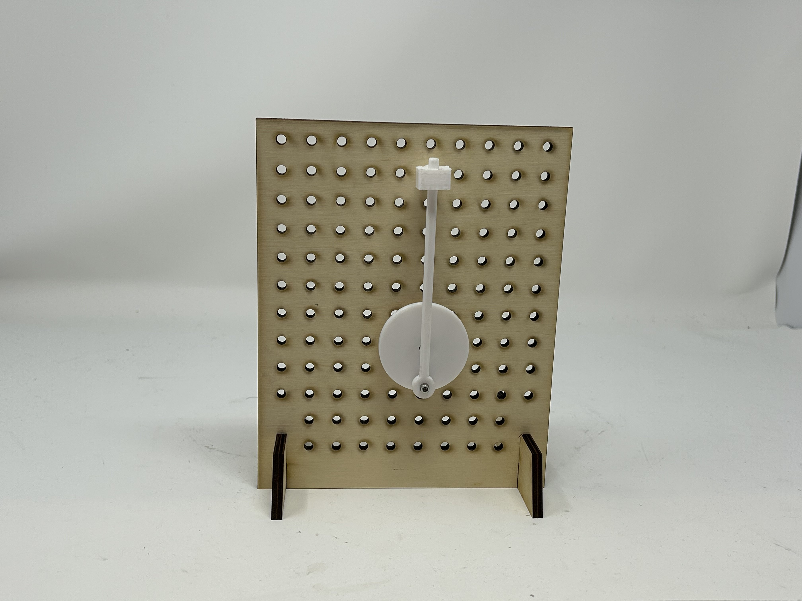
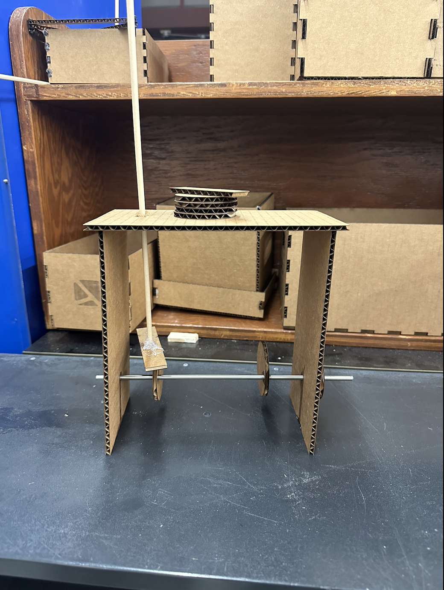
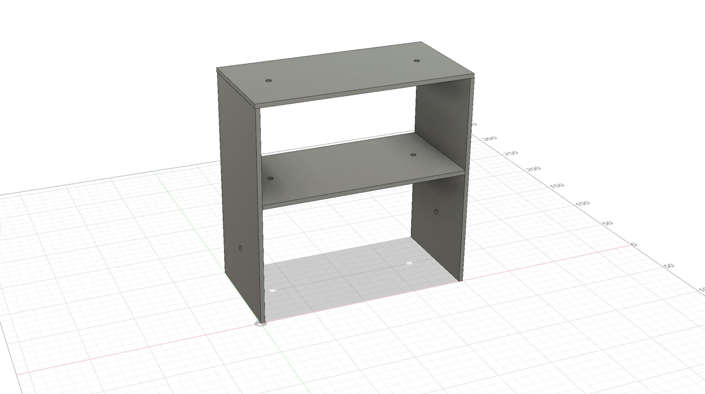

This week the assignment was to build a kinetic sculpture!
Raise the Roof!
Ever want a sculpture that knows how to have a good time? Raise the roof is an iconic dance move used for
high tempo, disco-like songs. This sculpture is here to remind you to raise the roof and will ultimately
be your biggest hype man. The raise the roof sculpture makes use of methods we learnt in class such as
assembly for joints, fusion 3D modelling as well as building automata. It then connects to a motor and
eventually its movement will be able to be more controlled and monitored.

Below are steps on how to make your own raise the roof sculpture.
List of materials and resources used:
Laser cutter
Cardboard with thickness of 4.4mm
Fusion 360 and Rhino for modelling
Assembly materials: screws, nuts, glue, etc
Steps for making Raise the Roof:
Turning the idea into something concrete: Find inspiration on the structure of the
sculpture and figure out the moving parts!


Initially, what drew me to making this sculpture was a mechanical bird sculptureI saw on
YouTube where the wings moved up and down giving the impression of flying. In this case,
gears were used to control this motion, however, my mind immediately remembered
Sofia's birds
and her use of wire for her sculpture. I also remembered the lab activity where we made
use of Circular Cams to create a crank slider, thus turning rotation into vertical
movement.
I came up with two prototypes shown in the image above. I decided to continue on with the
crank slider method (shown on the right) because we had gone over it in lab and seemed
more feasible.
I planned out a two-tier, shelf-like structure. The top tier being where the body is and where
the dowels emerge to connect to the elbows and the middle tier acting as the sort of slider
to stabilize the dowels and encourage the intended vertical motion. Then another dowel that
ran horizontally under these tiers with circular cams attached to it for each elbow to move up
and down.
Creating rough drafts and initial iterations

I decided to first try out making a crank slider up and down motion (this can be seen in the
left image). I realized the importance of the middle tier because the dowel was very unstable
when it was just connected through the roof of the structure.
I then expanded on this structure and added the middle tier which stabilized the movement as
well as demonstrated the elbow and shoulder joint movements and assembly. The video shows
this expansion, and I was excited at this stage because the up and down motion was going very
smoothly.
Modelling the final iteration of the sculpture.: Using Fusion 360 to make a 3D model
of the main skeleton of the sculpture and laser cutting.

I started by adding necessary parameters. I used my previous iterations to measure dimensions
for the structure. I used a length of 200mm and a width of 100mm for the two side faces and the
roof of the structure. I then subtracted double the thickness to make the middle tier and ended
up with a length of 192mm and a width of 100mm.
Now that I had the structure done, I added the necessary holes using extrude and the join to object
method to ensure that the holes aligned. I also made the holes slightly larger than the diameter of
the rods to account for friction and enable easier motion.
Once I was done with this, I used the laser cutter to cut these parts out. I also cut out three
circles each for each circular cam to make them thicker with holes to allow for the bottom rod to pass.
I also cut out necessary pieces for the body and arm parts with holes that would join them using
screws and nuts.
Finalizing and putting everything together: Using glue and screws where necessary
to build the sculpture.
I glued the structure to a base with the cams attached to the rod. I then added the dowels with
rectangle slabs at the base of them to allow for easier motion.
The only thing I had left was the body assembly. I used M4 screws and lock nuts to attach
the elbow and shoulder joints allowing for free motion in the joints. I glued the rods to the
elbows and the arms as well. I added a fun face too!
At this point the sculpture was moving as intended!
Adding the motor
I got the motor to work by simply connecting it to the arduino.
However, despite trying a heat shrink, a joint method and glue method, the motor was to powerful to
stay connected to the rod without falling off eventually.
It does work as intended with the motor, but only when I hold it in place.